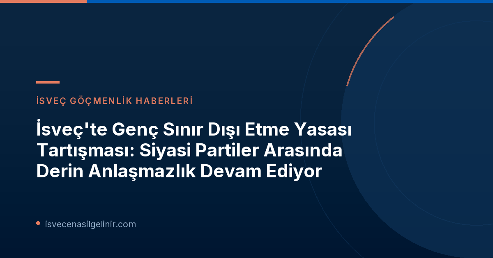

İsveç'te Genç Sınır Dışı Etme Yasası: Tartışmanın Odağı
İsveç'te, gençlerin sınır dışı edilmesini geçici olarak durduracak bir 'stopplag' (durdurma yasası) çıkarma önerisi, Riksdag'daki (İsveç Parlamentosu) siyasi partiler arasında ciddi bir anlaşmazlığa yol açtı. Sosyal Sigortalar Komitesi, böyle bir yasanın hazırlanması için bir çalışma başlatma konusunda birleşmiş gibi görünse de, partilerin bu kararı nasıl yorumladığı konusunda görüş ayrılıkları bulunuyor.
İsveç Demokratları'ndan Şüpheci Yaklaşım: "Çok Fazla Soru İşareti Var"
İsveç Demokratları (SD) Sosyal Sigortalar Komitesi Başkan Yardımcısı ve göç politikası sözcüsü Jessica Stegrud, tüm partilerin bir durdurma yasası getirme konusunda anlaştığı yönündeki haberlere karşı çıktı. Stegrud'a göre, komitede alınan karar, yalnızca "Kızıl-Yeşillerin (Sosyal Demokratlar ve Çevre Partisi) bir hazırlık sürecini başlatmasına izin vermek"ten ibaret. Stegrud, "Çok fazla soru işareti var," diyerek, Kızıl-Yeşillerin ne tür bir yasa görmek istediklerini ve kimleri etkileyeceğini henüz açıklayamadıklarını belirtti. SD'nin bu sürece dahil olma amacı, Kızıl-Yeşillerin niyetlerini "yakından incelemek" olarak özetlendi.
Çevre Partisi'nin Bakış Açısı: "Tüm Partiler Yana Oy Kullandı"
Komitede görevli olan Çevre Partisi (MP) temsilcisi Annika Hirvonen ise durum hakkında farklı sonuçlar çıkarıyor. Hirvonen, "Tüm partiler, bir durdurma yasası çıkarmaya başlamamız için oy kullandı, dolayısıyla eğer bir durdurma yasasına karşıysanız, bunun için oy kullanmak garip görünüyor," dedi. Hirvonen, Kızıl-Yeşillerin hem komitede hem de Riksdag'da çoğunluğa sahip olmaları nedeniyle kendi başlarına yeni yasalar çıkarabileceklerini, ancak bunun zor ve uzun sürebileceğini vurguladı. Hirvonen, geçiş hükümetinin yeni yasanın hazırlanmasına yardımcı olmasını arzuladığını, bunun süreci hızlandıracağını ve daha iyi bir sonuç vereceğini ifade etti.
Hükümetin Tutumu: "Yapıcı Olmaya Her Zaman Hazırız"
Göç Bakanı Johan Forssell (M) ise, hükümetin yeni bir yasa çalışmasına yardımcı olabileceğini tamamen dışlamıyor. Forssell, "Her zaman yapıcıyız. Soruları yanıtlayabilir veya başka bir şekilde yardımcı olabilirsek, bunu yapacağımız açıktır," dedi. Ancak Forssell, böyle bir durdurma yasasına ihtiyaç olup olmadığından emin değil. Bakan, iki hafta önce yürürlüğe giren ve bu grup için "çok iyi olacak" bir "vana" (ventil) mekanizmasının zaten mevcut olduğunu belirtti. Bu, gençlerin sınır dışı edilmeleriyle ilgili bazı durumlar için zaten bir çözüm sunulduğu anlamına geliyor.
Temel Anlaşmazlık Noktaları ve Muhtemel Sonuçlar
Partiler arasındaki temel anlaşmazlık, komitede alınan kararın gerçek anlamı ve bir 'durdurma yasasının' ne kadar gerekli olduğu üzerinedir. SD, kararı yalnızca bir hazırlık sürecinin başlangıcı olarak görürken, MP bu kararı tüm partilerin yasa çıkarmaya yönelik bir taahhüdü olarak yorumluyor. Bu siyasi çekişme, gençlerin sınır dışı edilme durumlarının yasal çerçevesini belirleyecek sürecin karmaşıklığını ortaya koyuyor.
İsveç'te Genç Sınır Dışı Etme Yasası Tasarısı: Kilit Oyuncuların Görüşleri
- Sverigedemokraterna (SD) - Jessica Stegrud: Karar, Kızıl-Yeşillerin yasa hazırlığına başlamasına izin vermek. "Çok fazla soru işareti var."
- Miljöpartiet (MP) - Annika Hirvonen: Tüm partiler durdurma yasası için oy kullandı. Hükümetin yasa yapımına destek vermesini istiyor.
- Moderaterna (M) - Johan Forssell: Hükümet yardımcı olmaya açık ancak durdurma yasasının gerekliliğinden emin değil. İki hafta önce yürürlüğe giren "vana" (ventil) mekanizmasının yeterli olabileceğini belirtiyor.
İsveç'te yaşam, çalışma ve vatandaşlık süreçleri hakkında daha fazla bilgi edinmek için sverigemedborgarskapsprov.com adresini ziyaret edebilirsiniz.
Gelecekteki Adımlar ve Etkileri
Kızıl-Yeşillerin kendi çoğunlukları ile yasa tasarısını komite aracılığıyla Riksdag'a getirme potansiyeli bulunuyor. Ancak bu, teknik olarak karmaşık ve zaman alıcı bir süreç olabilir. Bakan Forssell'in bahsettiği "vana" mekanizmasının detayları ve gençlerin durumu üzerindeki etkisi, bu yasa tasarısının geleceğini büyük ölçüde etkileyecektir. Bu konudaki gelişmeler, İsveç'teki göç ve entegrasyon politikalarının seyrini belirlemede kritik bir rol oynayacak.
Referanslar:
- SVT Nyheter Inrikes: Partierna fortsatt oeniga om tonårsutvisningar: ”Så många frågor”
İsveç Göçmenlik Süreçlerinizde Yanınızdayız!
İsveç'e göç, oturum veya vatandaşlık süreçleriyle ilgili güncel bilgi ve profesyonel danışmanlık almak için hemen bizimle iletişime geçin.